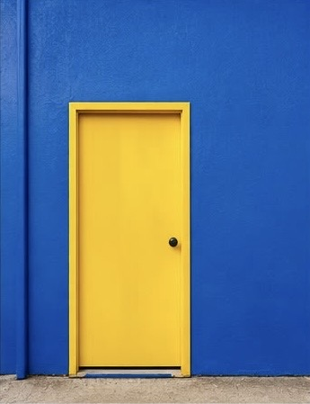
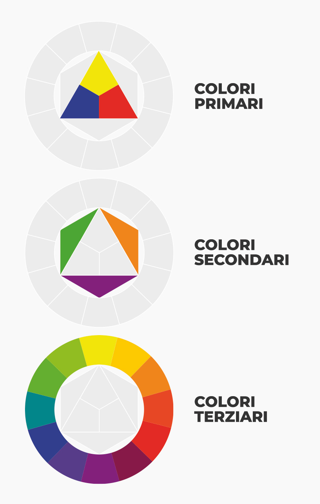
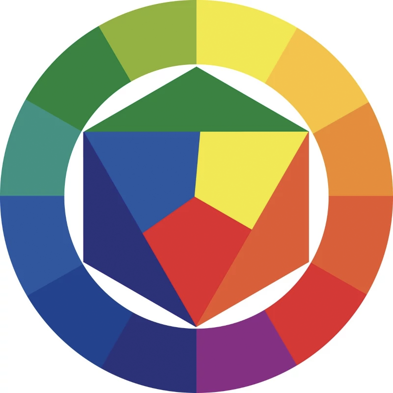
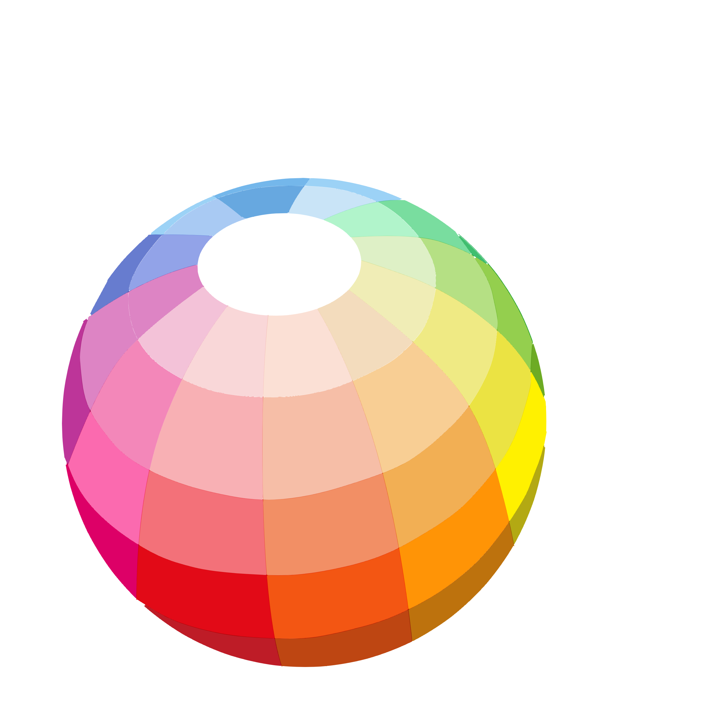
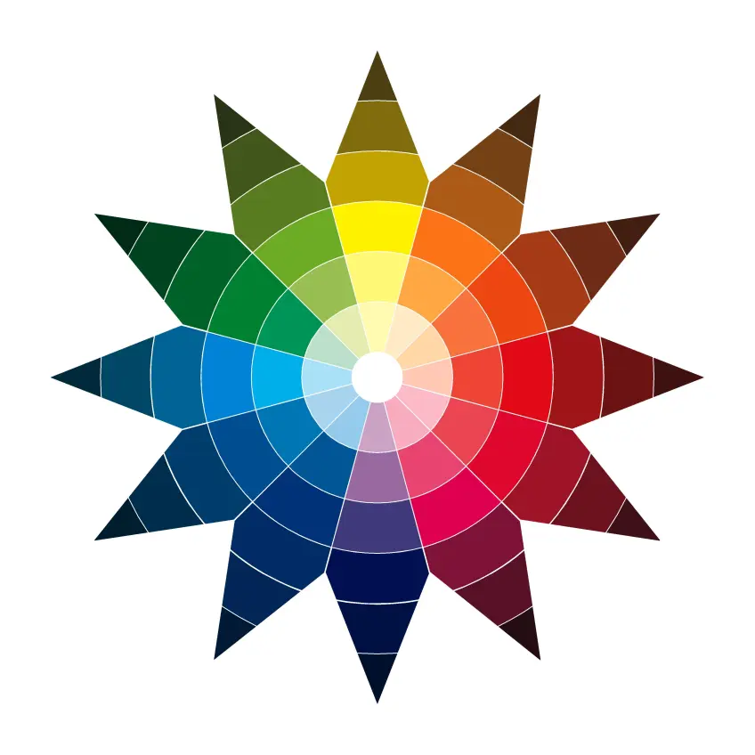
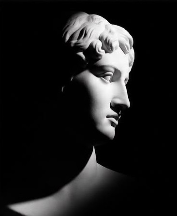
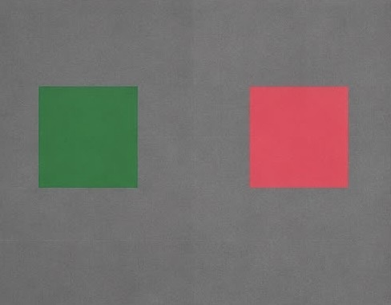
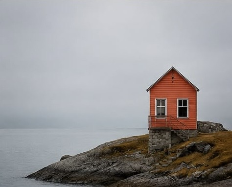
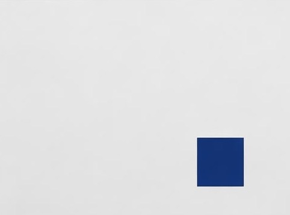

Il contrasto di colori puri.
Si accostano colori saturi e intensi con un effetto vivace
e molto evidente.
Geometrie e armonie della teoria cromatica
Johannes Itten (1888–1967) fu un pittore, scrittore e insegnante svizzero, celebre per i suoi studi sulla teoria del colore e per il contributo dato alla scuola del Bauhaus.
Nel 1961 sviluppò il celebre cerchio cromatico che porta il suo nome, basato sullo studio dell’armonia, della complementarità e delle relazioni tra i colori.
Attraverso queste ricerche elaborò un sistema capace di spiegare in modo chiaro il funzionamento delle combinazioni cromatiche e il loro impatto visivo.
Il cerchio cromatico di Itten è uno strumento usato per comprendere i colori e i rapporti tra di essi. I colori sono disposti in cerchio secondo le loro tonalità e si dividono in tre categorie: primari, secondari e terziari.
I colori primari sono rosso, giallo e blu. Non si ottengono mescolando altri colori e costituiscono la base di tutte le combinazioni. I colori secondari si formano unendo due colori primari: viola (rosso + blu), verde (giallo + blu) e arancione (rosso + giallo).
I colori terziari si ottengono mescolando un colore primario con un colore secondario vicino. Nel cerchio cromatico si trovano nella parte esterna e, insieme agli altri colori, formano dodici tonalità principali.


Nel cerchio cromatico di Itten:
Secondo Itten, i colori possono creare armonia o contrasto. I colori vicini nel cerchio sono armoniosi, mentre quelli opposti, chiamati complementari, creano un forte contrasto e si valorizzano a vicenda.
Se mescolati producono tonalità neutre, mentre se accostati rendono i colori più intensi. Esempi di colori complementari sono giallo e viola, arancione e blu, rosso e verde.
Il disco cromatico di Itten non rappresenta tutti i colori, perciò si utilizza la sfera cromatica di Philipp Otto Runge, un modello tridimensionale più completo.
La sfera mostra le relazioni tra i colori, i colori complementari e il rapporto con il bianco e il nero. I colori possono essere collegati in direzioni orizzontali, verticali o diagonali, creando passaggi graduali e armoniosi tra le diverse tonalità.


La stella cromatica di Itten è una rappresentazione bidimensionale della sfera cromatica che aiuta a comprendere i rapporti tra i colori. Comprende 12 colori: 3 primari, 3 secondari e 6 terziari.
Mostra anche le gradazioni dei colori e il rapporto con il bianco e il nero. I colori opposti sono complementari e creano forti contrasti, mentre quelli vicini producono armonie. Inoltre, figure geometriche come triangoli e quadrati aiutano a individuare combinazioni di colori equilibrate.
I sette contrasti di colore di Johannes Itten descrivono come i colori interagiscono tra loro creando diversi effetti visivi.
Poiché ogni colore cambia aspetto in base a quelli vicini, Itten ha individuato sette tipi di contrasto per comprendere e usare il colore in modo efficace, espressivo e armonioso.

Il contrasto di colori puri.
Si accostano colori saturi e intensi con un effetto vivace
e molto evidente.

Il contrasto di chiaroscuro.
Si basa sull’opposizione tra chiaro e scuro, crea profondità,
volume e atmosfera.
Il contrasto di caldo e freddo.
Si basa sull’opposizione tra colori caldi e colori freddi,
creando profondità.
Il contrasto di complementari.
Si basa sull’accostamento di colori opposti nel cerchio cromatico,
crea un forte impatto visivo.

Il contrasto di simultaneità.
Nasce dalla percezione del colore complementare da parte dell’occhio
e crea instabilità cromatica.

Il contrasto di qualità.
Si basa sulla differenza tra colori puri e colori spenti.

Il contrasto di quantità.
Si basa sul rapporto tra le dimensioni delle superfici colorate,
crea equilibrio e armonia nella composizione.